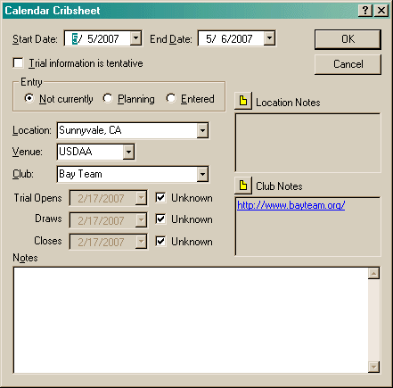

There are two dialogs associated with a calendar entry. This first dialog is displayed when you select a menu item from the context menu in the Calendar View. Since there may be multiple entries on a given day, this dialog is used to select which entry you want to work with.
When you create an entry (or edit an existing one), the following dialog is displayed.

If the trial is still tentative (for instance, you know a club always holds their trial on the Labor Day weekend, but it hasn't been announced yet), use the checkbox to signify this. You can also indicate whether you are planning on entering the trial. The following icons are used in the Calendar List to show the status of an entry.
There is no icon for a trial that is not tentative and that you are not
entering.
You have
entered this trial.
You are
planning on entering this trial. [When you are planning on entering a trial,
the 'Enter Online' button will be enabled if a URL has been entered.]
The
information for this trial is still tentative.
This trial is still tentative, but you have entered it.
(A little odd, and not likely to occur!)
This
trial is still tentative, and you are planning on entering it.
The Accommodations entries are available so you can designate that you
need (or don't need) a place to stay.
Once you have made an accommodation, a field is available for entering
the confirmation number.
Use the comments field for a location to enter information about any hotels,
campgrounds, etc.
You should include information such as whether a pet deposit is required.
The following icons show the state of your accommodation:
No accommodations are needed because you are driving.
Accommodations are needed, better call!
Accommodations have been made so you have a place to stay.
The Premium field allows you to enter a web URL pointing to where the premium is located. The Email Sec field allows you to enter the email address for the trial secretary. Click on the associated button to view the premium or send an email.
The Location field contains a list of locations from all the trials you have created and all of the calendar entries. You may also type anything you want in this field.
The Club and Venue fields work like the Locations field. However, if you want to create a trial entry directly from a calendar entry, you should only select a venue that is currently configured. You can enter "NADAC/ASCA" for a co-sanctioned trial, however, since that is not a valid venue (taken as a single string), you cannot create the trial directly. The recommended way to do this is to list only one venue and put the co-sanctioning information in the notes. Then when you create the trial, you can add the second venue.
If the opening and closing dates for the trial are known, you can uncheck the "Unknown" checkbox and set the date. These fields are for your information only.
The final field, notes, is simply so you can make any comments you want.